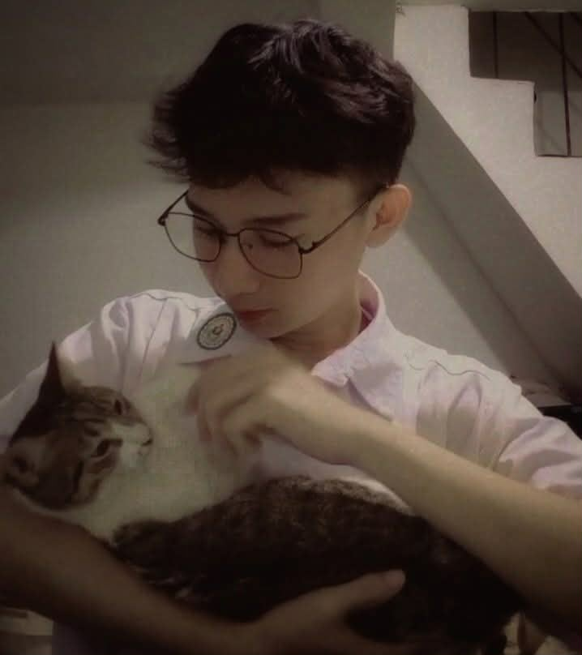
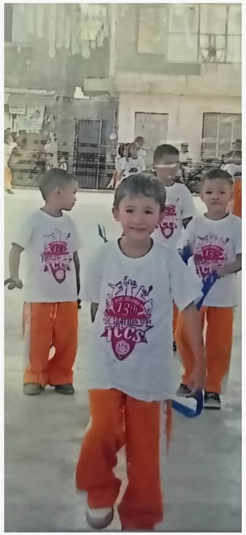
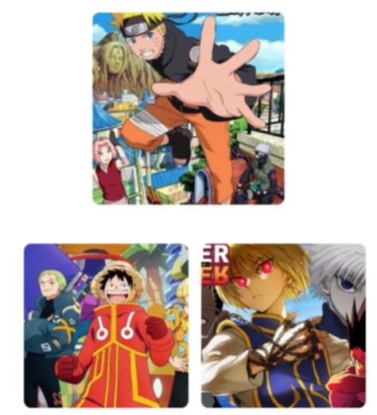

My Autobiography

Every life is a story, and this is mine.
My journey may still be short, but every chapter has shaped who I am today. Every experience, whether big or small, adds lessons that guide me to become a better version of myself. This is a reflection of the moments and memories that formed the person I am now.
My journey may still be short, but every chapter has shaped who I am today. Every experience, whether big or small, adds lessons that guide me to become a better version of myself. This is a reflection of the moments and memories that formed the person I am now.

About Me
Hi! I am Lauwrence Anthony Calvar, 18 years old, born on October 30, 2006. I live in Mayamot, Antipolo, Rizal. Growing up in a simple community taught me patience, determination, and appreciation for everyday life. My family and the people around me helped shape my character, dreams, and values.
Hi! I am Lauwrence Anthony Calvar, 18 years old, born on October 30, 2006. I live in Mayamot, Antipolo, Rizal. Growing up in a simple community taught me patience, determination, and appreciation for everyday life. My family and the people around me helped shape my character, dreams, and values.

I love watching anime.
Anime has been a big part of my daily life. Shows like Naruto, One Piece, and Hunter x Hunter inspire me to keep going, appreciate friendships, and continue chasing my dreams no matter how difficult life becomes. These stories teach me courage, resilience, and hope.
Anime has been a big part of my daily life. Shows like Naruto, One Piece, and Hunter x Hunter inspire me to keep going, appreciate friendships, and continue chasing my dreams no matter how difficult life becomes. These stories teach me courage, resilience, and hope.
I'm also a cat lover.
Cats bring joy and calmness into my life. Their playful and affectionate personality makes every day lighter. They remind me that even small things can bring great happiness and peace.
Cats bring joy and calmness into my life. Their playful and affectionate personality makes every day lighter. They remind me that even small things can bring great happiness and peace.

This is my story so far.
I’m excited for what’s next. Life is full of challenges and surprises, but I’m ready to face them with hope and determination. My journey is still beginning, and I’m looking forward to the future with a strong heart and a clear vision.
I’m excited for what’s next. Life is full of challenges and surprises, but I’m ready to face them with hope and determination. My journey is still beginning, and I’m looking forward to the future with a strong heart and a clear vision.